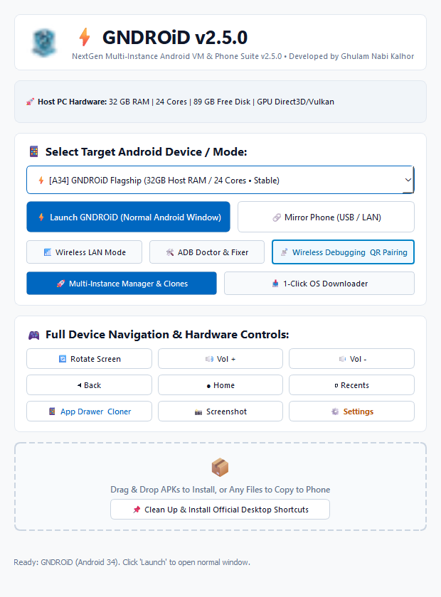
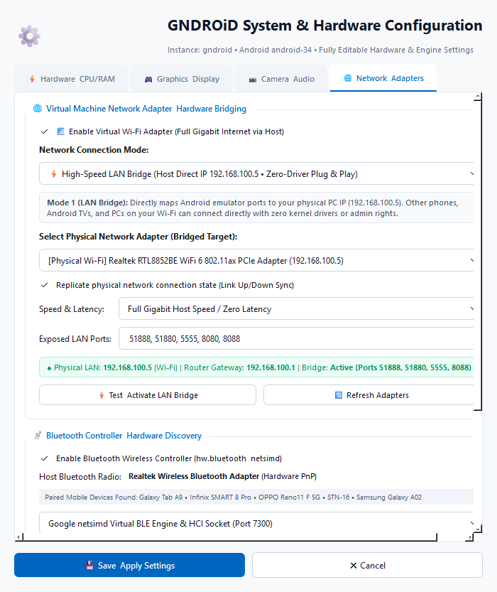
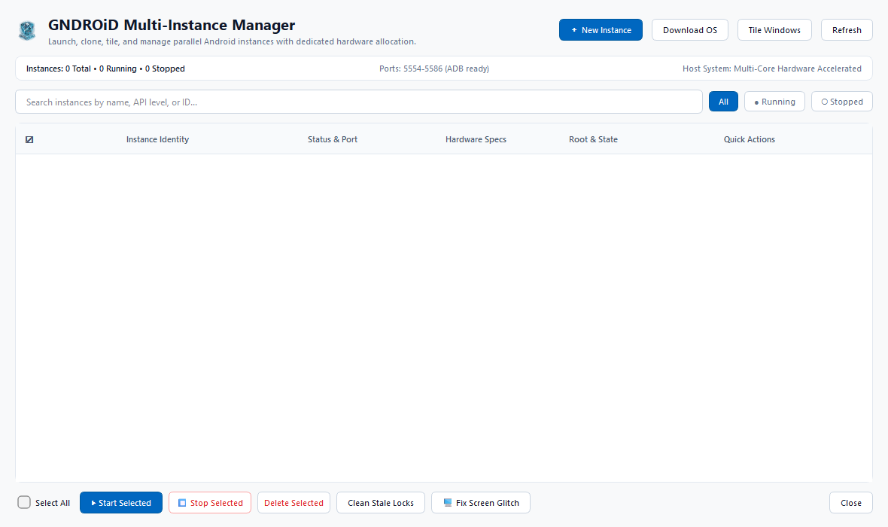
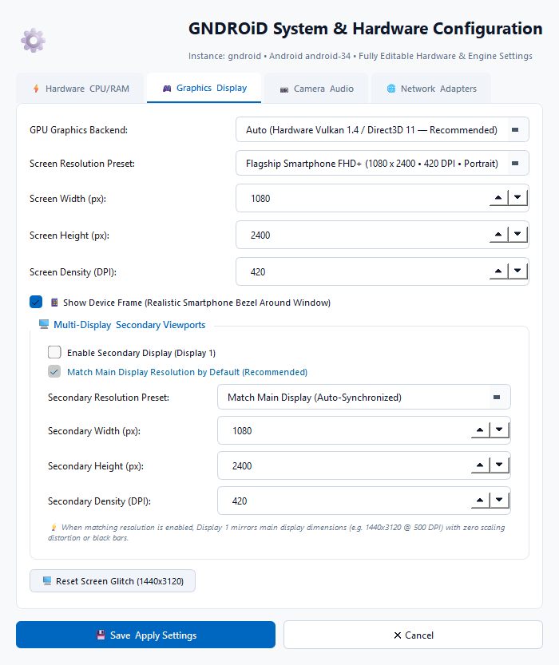
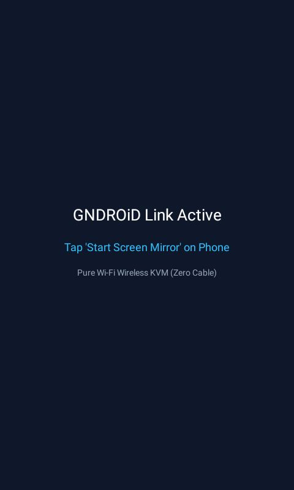

Layer-2 Hardware-Bridged Router DHCP VMs, Multi-Instance Parallel Orchestration, 120FPS Scrcpy Wireless Phone Mirroring, and Zero-Flicker Background Architecture powered by WHPX, Vulkan & Scrcpy 4.1.
scoop bucket add gndroid https://github.com/gnonymous1/scoop-gndroid; scoop install gndroid
9c87a8d2661e1e46c8571d8b4b0e273a465e0a5ca3ebcf4ad060c583681a194f

Built from the ground up to eliminate the latency, ad-injection, and network isolation bottlenecks of legacy emulators.
Directly bridges virtual Android instances to host physical network adapters (Realtek Wi-Fi / Ethernet) via NDIS/TAP. Your physical router assigns real 192.168.100.x DHCP leases, making each VM an independent LAN endpoint.
Execute 3 to 4+ parallel Android VMs simultaneously, each with an independent virtual MAC address and dedicated physical router IP (e.g. .155, .156, .157). Complete storage and identity isolation.
Zero-cable wireless screen mirroring powered by Scrcpy 4.1. Stream virtual displays or physical phones at up to 120 FPS with docked controls ribbon, audio forwarding, and non-locking screen standby (Alt+O).
All internal QEMU probing, netsimd, scrcpy, and adb workers execute silently via Win32 CREATE_NO_WINDOW (0x08000000). Bound to OS Job Objects to guarantee zero zombie processes on exit.
Switch effortlessly between Flagship Android Smartphone (1080x2400 portrait), Android TV 4K (3840x2160 landscape with Leanback UI & D-Pad remote), and Physical Phone Cloner with real SIM & sensor passthrough.
Google netsimd virtual BLE controller on port 7300 paired with host Bluetooth radio discovery. Includes USB fingerprint simulation, real GPS geolocation injection, accelerometer, and light sensors.
Compare GNDROiD directly against commercial emulators and legacy platforms.
| Feature / Metric | GNDROiD v2.5.0 | BlueStacks 5 | LDPlayer 9 | WSA (Microsoft) | Genymotion |
|---|---|---|---|---|---|
| Mode 2 Router DHCP IP | ✓ Native 192.168.100.x | ✗ NAT Only (10.0.2.x) | ⚠ Unstable / Crashes | ⚠ Internal VSwitch | ⚠ Host-Only Adapter |
| Multi-Instance Router IPs | ✓ Unique IP & MAC / VM | ✗ Shared Host IP | ✗ Frequent Collisions | ✗ Single Instance | ⚠ High Overhead |
| Physical Phone Mirroring | ✓ Built-in 120 FPS | ✗ Not Supported | ✗ Not Supported | ✗ Not Supported | ✗ Not Supported |
| Zero-Flicker Background VM | ✓ Win32 Job Objects | ✗ Console & Promo Popups | ✗ Ad Spawns & Popups | ⚠ Buggy Headless | ✗ VirtualBox UI |
| Android TV 4K Mode | ✓ Native Leanback UI | ✗ Mobile Only | ✗ Mobile Only | ✗ Mobile Only | ✗ Mobile Only |
| Idle RAM Footprint | 350 – 650 MB | 1,800 – 3,200 MB | 1,400 – 2,800 MB | 2,200 – 4,000 MB | 1,500 – 3,000 MB |
| Idle CPU Overhead | < 1.5% | 5% – 12% | 6% – 15% | 4% – 10% | 2% – 5% |
| Ads & Telemetry | Zero (100% Clean) | Heavy Ads & Tracking | Bundled Adware | Clean (Discontinued) | Clean (Commercial) |
| License & Cost | Apache 2.0 (Free) | Closed Freemium | Closed Freemium | Discontinued | $415+/yr Commercial |




Enable-WindowsOptionalFeature -Online -FeatureName HypervisorPlatform -All
Download GNDROiD-v2.5.0-Early-Access-Windows-x64.zip (or run the Scoop command) and extract to your desired folder.
Ensure Windows Hypervisor Platform is enabled in Windows Features so hardware acceleration operates at maximum throughput.
Run gndroid.exe for instant portable launch, or right-click setup.ps1 for automated desktop shortcut installation.
Select Mode 2 Bridged to receive a physical router IP, or connect an Android device for 120 FPS wireless Scrcpy mirroring.